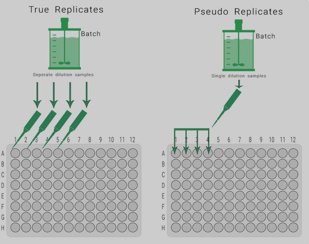
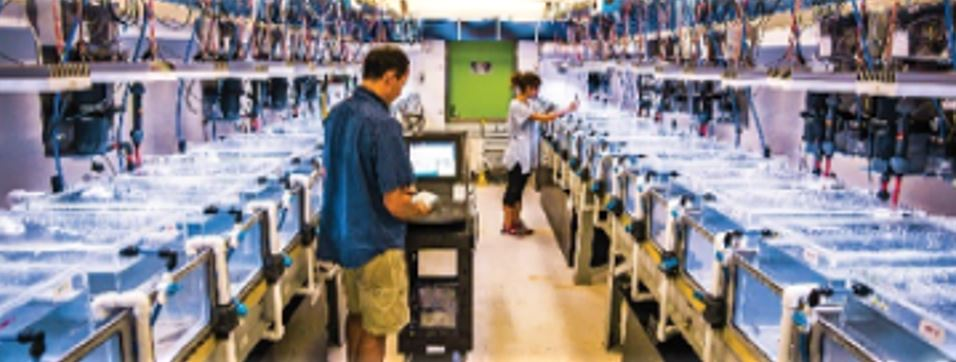
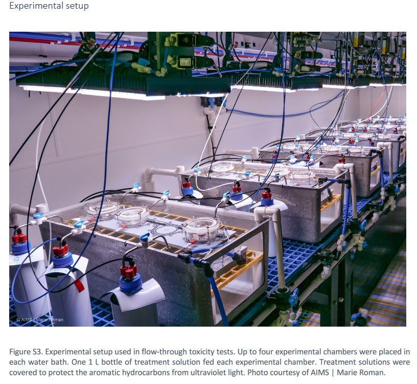
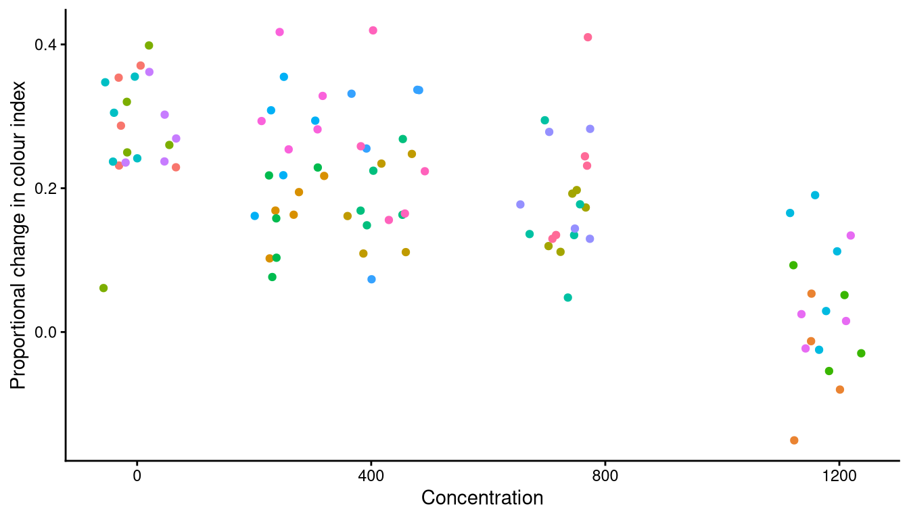
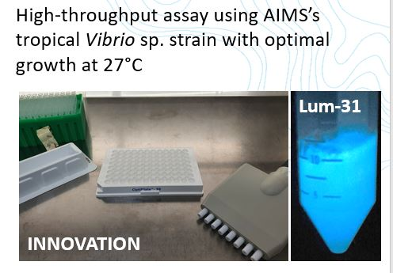
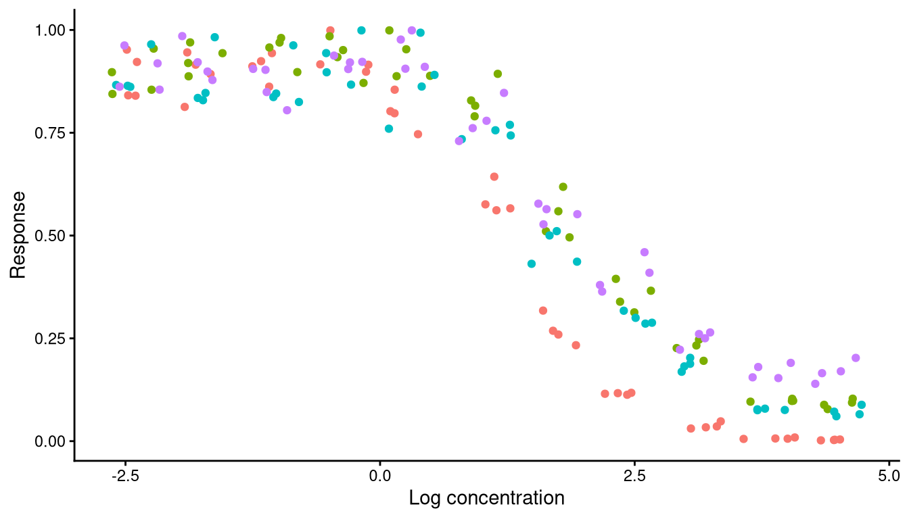
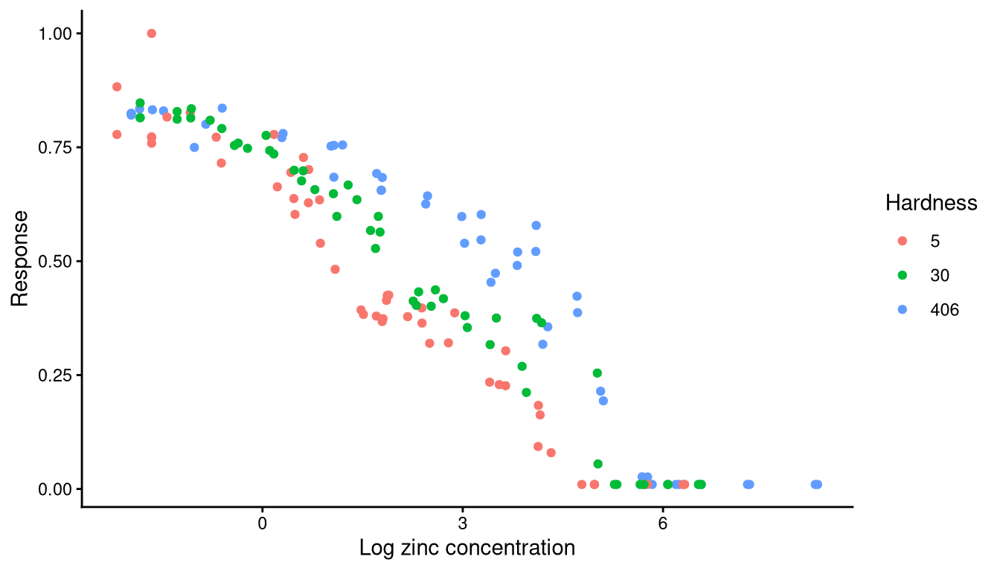
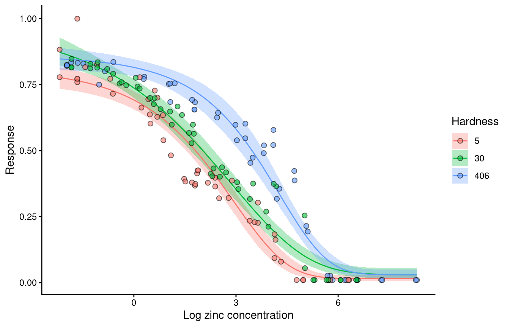
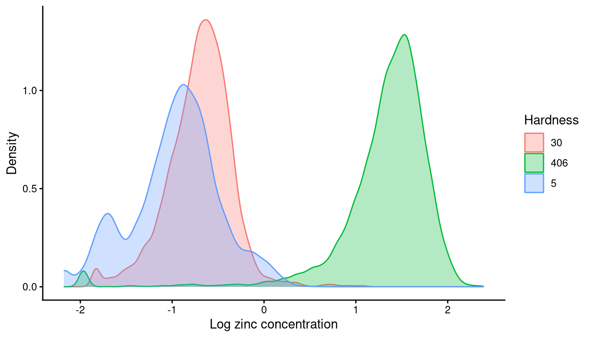
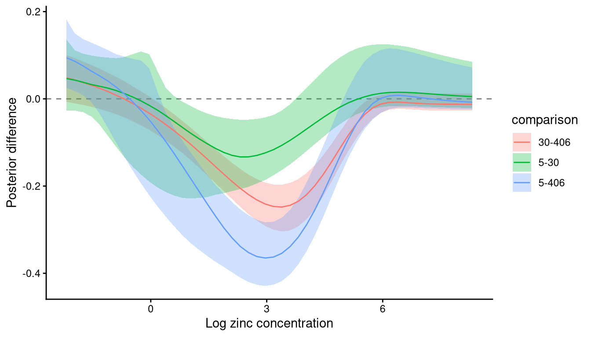

Development build. These pages are being revised and have not
been reviewed. The current course material is at
open-aims.github.io/cr_modelling_training.
Factor covariates and groupings
Non-independence, grouped designs, and comparing curves between levels
Background
Concentration-response designs are often more complicated than one response measured once at each of several concentrations. Replicates are housed together in tanks, a whole experiment is repeated on a second plate, fragments of one coral colony are spread across the treatments, or the same test is run under several water chemistries. Each of those puts structure into the data that the modules so far have ignored.
This module covers two different problems that the same syntax can address, and the distinction between them decides almost everything else.
A grouping is a factor whose levels are not of interest in themselves. Tanks, vials, plates and genotypes are groupings: you are not trying to estimate the toxicity of tank 7, you are trying to stop the tank structure from making your intervals too narrow.
A factor covariate is one whose levels are of interest. Water hardness, temperature and exposure duration are factor covariates: the question is how toxicity changes across them, and an estimate is wanted for each level.
Pseudo-replication and hierarchical effects
Most ecotoxicological experiments contain grouping elements, such as tanks, vials or batches, that hold multiple measurements that cannot be treated as strictly independent. These are pseudo-replicates. They are handled in ecological statistics with mixed, hierarchical or random effects.
In concentration-response modelling they arise in two settings, and the difference is fundamental to how each is handled.

Within-concentration groupings
Tank and vial effects. Several individual organisms are housed together, and the container has a single concentration. The non-independence occurs within a concentration and does not extend across the concentration range, because a tank cannot hold two concentrations at once.
To avoid the criticism of pseudo-replication, it is common practice to pool such observations and model the group mean. That has two disadvantages. It discards the within-group information, including the within-group variance. And where the number of observations per group varies, it weights every group mean equally even though some rest on far fewer observations than others. In a growth experiment with some mortality, the number of individuals measured differs between treatments, and a group mean ignores that some groups hold a great deal of information and others very little.
Across-concentration groupings
Data also arise from repeated experiments, or from groupings within an experiment such as genotype or plate, that span the full range of the predictor. A within-group mean cannot be taken here, because a group is not at one concentration.
Strategies we have seen include ignoring the non-independence, fitting many independent datasets and then aggregating the threshold estimates afterwards, or normalising each experiment and ignoring the within-group correlation. Fitting separately is undesirable in that each fit rests on fewer data and returns a wider interval, though it is sometimes the right answer for the reasons set out below. Normalising each experiment to its own control has the problems module 2 describes.
An introduction to mixed modelling
Mixed effects models are common in ecology and are theoretically the right way to handle non-independence in an experimental design. A full treatment is beyond this course, and the short video below introduces the concepts non-technically. The example is a field study, and the ideas transfer directly.
Random effects for non-linear models
One distinction from the video matters here: the difference between a random intercept model and a random slope and intercept model.
Two things make this harder in a non-linear setting than in the linear models the video uses.
A non-linear model does not have a slope and an intercept. It has top, bot, nec, beta, ec50 and others, and a deviation can be placed on any of them.
And bayesnec fits on an identity link, so the mean is on the scale of the response. Most of the families appropriate to this work are bounded at 0, at 1, or at both. A deviation that pushes the mean outside those bounds describes an impossible response, which matters below.
The choice between the two follows directly from the distinction above. Within-concentration groupings take a deviation on the intercept alone, because a tank sits at one concentration and the data contain no information about how the rest of the curve varies between tanks. Across-concentration groupings can take a deviation on the whole curve, because each level spans the concentration range.
Group-level terms in bayesnec
Three forms are available, and they differ in how much of the curve is allowed to vary.
y ~ crf(x, model = "nec4param") + ogl(tank) # the whole curve is displaced
y ~ crf(x, model = "nec4param") + (top | tank) # one named parameter varies
y ~ crf(x, model = "nec4param") + pgl(plate) # every parameter variesogl() adds an offset at the group level: the whole fitted curve is displaced up or down for each level, keeping its shape. (par | group) uses the ordinary brms syntax to place a deviation on one named parameter. pgl() places a deviation on every parameter of the equation at the group level, which fits a separate curve shape for each level.
Deviations that cannot leave the support
This is the part that differs from a grouped model fitted directly in brms, and it governs how any output below should be read.
brms declares a group-level deviation unconstrained, which is correct for a Gaussian response on an identity link and wrong for every other family here. A deviation added to top on a response bounded by 0 and 1 can put the mean above 1, which no beta distribution can represent, and Stan rejects the proposal and records a divergent transition. On a boundary-adjacent parameter, most proposals are rejected and the fit is unusable.
bayesnec therefore applies the deviation multiplicatively wherever it acts on the whole curve or on top or bot. On a 0 to 1 response the deviation scales the odds of the mean; on a positive response it scales the mean itself. A deviation of zero leaves the curve exactly as it was, so top, bot, nec and beta keep their meanings, while the mean can no longer leave its support however far a proposal travels.
The difference is large. On a simulated beta-binomial design across three seeds, the multiplicative form gave no divergent transitions at all, against 70 to 95 per cent of transitions diverging under the additive form on the same data, and it sampled about twice as fast. On the herbicide data with a nec4param equation, a (bot | herbicide) term gave 51 divergent transitions of 2,000 under the additive form at adapt_delta = 0.95, and none at Stan’s default of 0.8 under the multiplicative one.
A deviation on nec, ec50, beta, slope, d or f is still added directly, because none of those is bounded by the likelihood: nec and ec50 are on the predictor axis, and the rest are estimated on a log scale.
One restriction remains. The transformation of the mean is defined only where the mean is provably inside its range, so ogl() is not used for neclin, neclinhorme and ecxlin, whose mean is unbounded below, nor for the hormesis equations, whose mean can reach or exceed 1.
Priors on the group-level terms
A group-level term adds a standard deviation for each parameter it applies to, and ogl() adds an offset as well. Module 6 describes how bayesnec builds its priors, and these follow the same three-way split.
A group-level standard deviation is given student_t(3, 0, s), where s is one tenth of the observed range of the scale the parameter lives on: the response range for top, bot and the ogl offset, the predictor range for nec and ec50, and a fixed value for the parameters estimated on a log scale. Under that prior there is a probability of about 0.39 that the group-level standard deviation exceeds s, so it is weakly informative rather than tight.
Note that s comes from the data rather than from the spread of the parameter’s own prior. The two are different quantities, and deliberately so: a prior standard deviation of 2.5 times that of the response is a reasonable statement of ignorance about a level, and a poor one about the deviation around that level.
Deviation on the intercept
The common case in ecotoxicology is replicate tanks or vials holding several organisms each, which is the within-concentration grouping above.

The example is an exposure of small Acropora millepora colonies, about 11 mm fragments, to 1-methylnaphthalene in replicated flow-through exposures. Partial colony mortality was measured daily for seven days and again after a further seven days in clean seawater. Colour score is used here.
colour <- read.csv("example_ogl.csv") |>
mutate(y = Perc_change / 100,
groupvar = factor(paste(Replicate, Treatment, sep = "_")),
x = as.numeric(Treatment)) |>
na.omit()
head(colour) Nominal Treatment Replicate Tile.colour T0_Colour_index T7_Colour_index
1 0 0 A red 6.280 4.841
2 0 0 A green 5.102 3.297
3 0 0 A grey 5.735 4.407
4 0 0 A purple 5.965 4.253
5 0 0 A blue 5.361 3.374
6 0 0 B red 6.557 4.919
Perc_change y groupvar x
1 22.91401 0.2291401 A_0 0
2 35.37828 0.3537828 A_0 0
3 23.15606 0.2315606 A_0 0
4 28.70075 0.2870075 A_0 0
5 37.06398 0.3706398 A_0 0
6 24.98094 0.2498094 B_0 0The response is the proportional change in colour index and the predictor is the treatment concentration. The grouping combines the replicate and the treatment, so that each container is uniquely identified; replicates are commonly labelled 1 to 5 within each treatment and are not unique across treatments.
ggplot(colour, aes(x, y, colour = groupvar)) +
geom_jitter(show.legend = FALSE) +
labs(x = "Concentration", y = "Proportional change in colour index") +
theme_classic()
A deviation on the intercept is what suits this design. The same fit is made with and without it, so the two can be compared.
fit_plain <- bnec(y ~ crf(x, model = "ecxlin"), data = colour, seed = 70)
fit_ogl <- bnec(y ~ crf(x, model = "ecxlin") + ogl(groupvar),
data = colour, seed = 70)ecxlin is used rather than a full model set, to keep the example to two fits. It is a linear decline, so this is a simple linear regression with a group-level offset.
ogl(groupvar) is preferred here to (top | groupvar). Both displace the curve, and the first states that intention directly and is applied on a scale the mean cannot leave.
read.csv("data/grouping_ogl_compare.csv") |> kable()| fit | weight | elpd_diff | se_diff |
|---|---|---|---|
| no group term | 0.178 | -2.4 | 2.2 |
| ogl(groupvar) | 0.822 | 0.0 | 0.0 |
The comparison is by leave-one-out cross-validation, as module 4 describes. Weight on the grouped fit is evidence that the container structure is real and that ignoring it would have produced intervals narrower than the data support.
Deviation on every parameter
Where a grouping spans the whole concentration range, the curve itself can vary between levels, and pgl() fits that.

The example is a bioluminescent bacterial assay developed at AIMS for tropical marine conditions (Luter et al. 2025). The whole concentration series runs on a single plate, and the plate is repeated across several experiments on the same contaminant, so each level of the grouping covers the full predictor range.
plates <- read.csv("example_pgl.csv")
head(plates) X log_x plateRep y
1 1 -2.407946 Lum_27C_rep1_qtoxB 0.8410503
2 2 -2.407946 Lum_27C_rep1_qtoxB 0.8401287
3 3 -2.407946 Lum_27C_rep1_qtoxB 0.9221791
4 4 -2.407946 Lum_27C_rep1_qtoxB 0.9521653
5 5 -1.714798 Lum_27C_rep1_qtoxB 0.8128610
6 6 -1.714798 Lum_27C_rep1_qtoxB 0.8927248ggplot(plates, aes(log_x, y, colour = plateRep)) +
geom_jitter(show.legend = FALSE) +
labs(x = "Log concentration", y = "Response") +
theme_classic()
The plot shows clear differences between plates.
fit_plain <- bnec(y ~ crf(log_x, model = "nechorme"), data = plates, seed = 70)
fit_pgl <- bnec(y ~ crf(log_x, model = "nechorme") + pgl(plateRep),
data = plates, seed = 70)nechorme is used because the plot shows an initial rise before the decline, which is hormesis. Expect the fitting messages to look alarming: these models are complex and finding initial values that do not error takes bayesnec several attempts.
read.csv("data/grouping_pgl_compare.csv") |> kable()| fit | weight | elpd_diff | se_diff |
|---|---|---|---|
| no group term | 0 | -56.3 | 11.5 |
| pgl(plateRep) | 1 | 0.0 | 0.0 |
Two things to read from the fits themselves. The credible bands of the grouped fit are far wider than those of the fit that assumes independence, which is the point of fitting it: the narrow bands were an artefact of treating 60 observations from six plates as 60 independent ones. And the convergence diagnostics for the group-level standard deviations are the ones to check hardest, because those parameters are the least well determined in the model.
The number of levels a deviation needs
A group-level standard deviation is estimated from the variation between levels, so it needs levels to estimate it from. The consensus is that five should be treated as a minimum, and Stan may want more.
That minimum is easy to reach for tank effects, where there are usually several tanks per concentration and often twenty or thirty in total. It is rarely reached for across-concentration groupings, where six plates or four genotypes is a typical design. This is the practical reason to consider the alternative below, rather than a statistical preference for it.
Factor interaction covariates
Where the levels are of interest in themselves, a deviation is the wrong tool entirely. A group-level term marginalises over the levels and returns one curve; a factor covariate asks for a curve, and a toxicity estimate, for each level.
bnec() does not support an interaction with a fixed factor inside its own formula. Adding an interaction term to a single non-linear equation is straightforward and may be added in a future release. Supporting it across the whole model set is not, because the functional form of the response may itself change between levels, and defining every non-linear combination at every level is a much larger problem.
Two routes are available in the meantime, and they answer different questions.
Fitting each level separately
bnec_group() fits the model set independently within each level of a factor. Each level gets its own model averaging, so the shape of the curve is free to differ between levels, which is the assumption a single interaction model cannot make.
fit_hardness <- bnec_group(y ~ crf(x, model = "decline"),
data = zinc, group_var = "hardness", seed = 70)This is what the earlier version of this module did with a hand-written loop over unique(dat$hardness). bnec_group() does the same thing and adds three things a loop does not. It gives each level its own seed, realised in the calling session and stored on the returned object as level_seeds, so a grouped call repeats exactly. It records which models failed at which level. And it can use a future plan across either the levels or the models within a level, choosing whichever arrangement takes fewer rounds and reporting which it took; module 4 covers the plans.
The price is run time. A set of fourteen equations across three levels is forty-two fits, and this is the point at which fitting stops being something done at render time.
An interaction on a single equation
The alternative estimates the parameters of a single equation separately for each level, which is fewer parameters than a deviation on each and does not need five levels to work. bayesnec is used to choose the equation and to build the priors, and brms fits the interaction directly.
The case study is a subset of the data behind doi:10.1039/D2EM00063F, describing zinc toxicity to a freshwater micro-alga at three water hardnesses, at a fixed pH of 8.3. The response is population growth rate as a percentage of the control growth rate for each experiment. The data were supplied by Gwil Price.
zinc <- read.csv("example_fi.csv") |>
na.omit() |>
mutate(y = (Pcon / max(Pcon) + 0.01) * 0.99,
x = log(Mean.Zn),
hardness = factor(round(Hardness))) |>
select(x, y, hardness)
range(zinc$y)[1] 0.0099 0.9999table(zinc$hardness)
5 30 406
50 51 50 Two preparation decisions are worth naming, because module 2 argues against one of them.
The concentrations span five orders of magnitude and are logged, which is the decision module 2 covers.
The response is divided by the maximum observed value and then shifted off 0 and 1. This is exactly the practice module 2 recommends against, and it is done here because these are the data as supplied: the response is already a percentage of each experiment’s own control, so the sampling variability of that control has already been discarded before the analysis began. Where you have the underlying growth rates, model those instead and read the decline from the fitted control. The shift off the boundaries is needed because brms is called directly below and does not make the adjustment bnec() makes.
ggplot(zinc, aes(x = x, y = y, colour = hardness)) +
geom_jitter() +
labs(x = "Log zinc concentration", y = "Response", colour = "Hardness") +
theme_classic()
The effect of hardness on toxicity is clear.
Which equation to use is not, so the whole decline set is fitted to the pooled data and the best-supported equation taken from it.
fit_all <- bnec(y ~ crf(x, model = "decline"), data = zinc, seed = 70)
best <- pull_best(fit_all)read.csv("data/grouping_zinc_weights.csv") |>
mutate(wi = round(wi, 3)) |>
kable()| model | waic | wi |
|---|---|---|
| nec3param | -254.2199 | 0.000 |
| nec4param | -251.3739 | 0.000 |
| ecxwb1 | -306.1118 | 0.902 |
| ecxwb1p3 | -293.8985 | 0.093 |
| ecxwb2p3 | -281.6038 | 0.001 |
| ecxll3 | -293.3476 | 0.003 |
pull_best(), from module 4, returns the highest-weighted equation and reports the weight alongside the number of candidates, which is what says whether the selection means anything.
The brms formula and the priors are then read off that fit and reused:
best_brms <- pull_brmsfit(best)
best_brms$formula
priors <- brms::prior_summary(best_brms)# The right-hand side of each parameter line is what changes: `~ 1` fits one
# value for every level, and `~ hardness` fits one per level.
bf_plain <- brms::bf(
y ~ bot + (top - bot) * (1 - exp(-exp(-exp(beta) * (x - ec50)))),
bot + ec50 + top + beta ~ 1, nl = TRUE)
bf_inter <- brms::bf(
y ~ bot + (top - bot) * (1 - exp(-exp(-exp(beta) * (x - ec50)))),
bot + ec50 + top + beta ~ hardness, nl = TRUE)
fit_plain <- brms::brm(bf_plain, data = zinc, family = Beta(link = "identity"),
prior = priors, iter = 5000, seed = 700,
save_pars = brms::save_pars(all = TRUE))
fit_inter <- brms::brm(bf_inter, data = zinc, family = Beta(link = "identity"),
prior = priors, iter = 5000, seed = 700,
save_pars = brms::save_pars(all = TRUE))Whether the interaction is supported at all is the first thing to read, and leave-one-out weights answer it on the same footing module 4 used:
read.csv("data/grouping_zinc_model_weights.csv") |> kable()| fit | weight |
|---|---|
| no interaction | 0.191 |
| hardness interaction | 0.809 |
Weight on the interaction says the levels differ by more than the shared curve can absorb. Weight on the simpler fit says they do not, and that one curve describes every level.
# read.csv() returns hardness as an integer, because the levels are numbers.
# The observations carry it as a factor, and ggplot cannot put a continuous and
# a discrete scale on one aesthetic, so it is made a factor here to match.
preds <- read.csv("data/grouping_zinc_preds.csv") |>
mutate(hardness = factor(hardness, levels = levels(zinc$hardness)))
ggplot(preds) +
geom_ribbon(aes(x = x, ymin = Q2.5, ymax = Q97.5, fill = hardness),
alpha = 0.3) +
geom_line(aes(x = x, y = Estimate, colour = hardness)) +
geom_jitter(data = zinc, aes(x = x, y = y, fill = hardness),
pch = 21, size = 2, alpha = 0.6) +
labs(x = "Log zinc concentration", y = "Response",
colour = "Hardness", fill = "Hardness") +
theme_classic()
That figure shows the limitation of this route, and it is the reason the two approaches are both presented. Fitting an interaction this way assumes the functional form is the same at every level, and only the parameter values differ. Here the highest hardness treatment is not described well by the shape the pooled data selected.
Where that happens, fit the levels separately with bnec_group(), which lets the shape differ, and compare the results as below. The alternative, generalised additive models with a factor interaction term, is outside this course.
Comparing levels
compare_posterior() takes a named list of fits and returns the posteriors on a common footing, the differences between them, and the probability that one exceeds another. Module 7 uses it across substances; here it is used across levels of a factor.
post_comp <- compare_posterior(fit_hardness, comparison = "n(s)ec")
post_fitted <- compare_posterior(fit_hardness, comparison = "fitted")# compare_posterior() returns the level names as data frame column names, which
# R prefixes with "X" where they begin with a digit. Stripped here so the legend
# reads as the hardness values the experiment used.
read.csv("data/grouping_zinc_ne_posterior.csv") |>
mutate(model = sub("^X", "", model)) |>
ggplot(aes(x = value, group = model, colour = model, fill = model)) +
geom_density(alpha = 0.3) +
labs(x = "Log zinc concentration", y = "Density",
colour = "Hardness", fill = "Hardness") +
theme_classic()
read.csv("data/grouping_zinc_prob_diff.csv") |>
separate(col = comparison, into = c("hardness", "against"), sep = "-") |>
pivot_wider(names_from = against, values_from = prob) |>
kable()| hardness | 30 | 406 |
|---|---|---|
| 5 | 0.3179545 | 0.0145036 |
| 30 | NA | 0.0165041 |
read.csv("data/grouping_zinc_diff.csv") |>
ggplot() +
geom_hline(yintercept = 0, linetype = 2, colour = "grey50") +
geom_ribbon(aes(x = x, ymin = diff.Q2.5, ymax = diff.Q97.5,
fill = comparison), alpha = 0.3) +
geom_line(aes(x = x, y = diff.Estimate, colour = comparison)) +
labs(x = "Log zinc concentration", y = "Posterior difference") +
theme_classic()
A difference band that excludes zero over part of the concentration range says the curves differ there, and one that contains zero throughout says they do not. This answers the question a factor covariate is asked for, as a probability computed from the draws rather than as a significance test, and it does so without requiring the levels to share a curve shape.
Provenance of these fits
None of the fitting above runs when this page is built. The bnec_group() call alone is dozens of fits, and the interaction models are slow enough that a participant would be waiting rather than learning.
They are produced by scripts/generate_grouping_fits.R, which writes the compact results this module reads into vignettes/data/. The code shown is the code that was run.
Generated by scripts/generate_grouping_fits.R
date: 2026-09-17 01:16:32
elapsed: 30.8 mins
seed: 70
R: 4.6.1
bayesnec: 2.1.3.35
brms: 2.23.0
cmdstanr: 0.9.0
pooled zinc set: decline, 14 equations
best pooled equation: ecxwb1
hardness levels: 5, 30, 406
sampler screen: rhat <= 1.01, ess >= 400, divergences <= 10References
Luter, Heidi M., Katarina Damjanovic, Marie C. Thomas, Rebecca Fisher, Lone Høj, and Andrew P. Negri. 2025. “A Bioluminescent Bacterial Toxicity Assay for Tropical Marine Environments.” Environmental Toxicology, ahead of print. https://doi.org/10.1002/tox.70003.